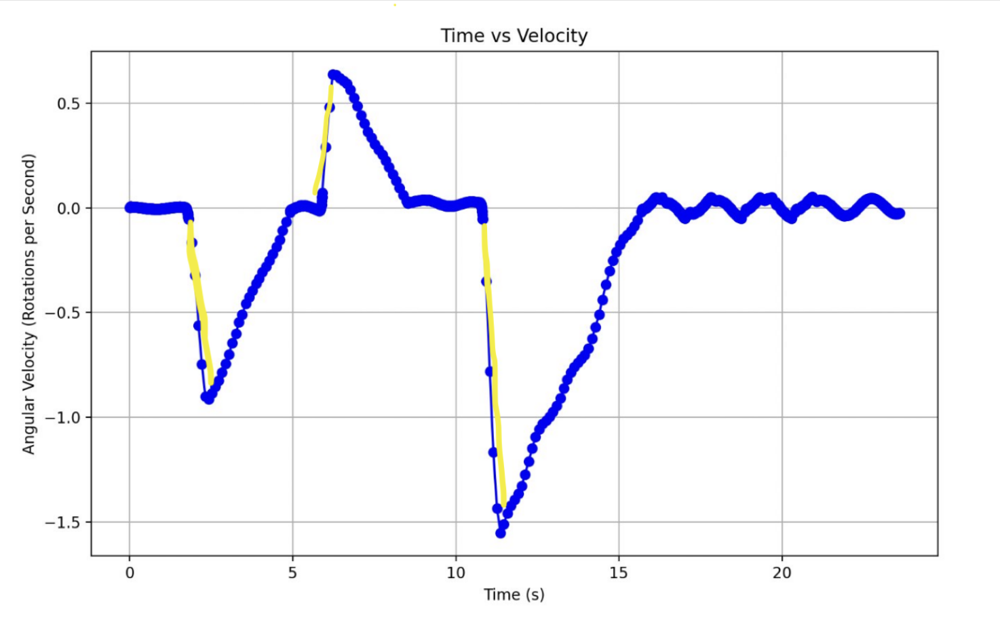
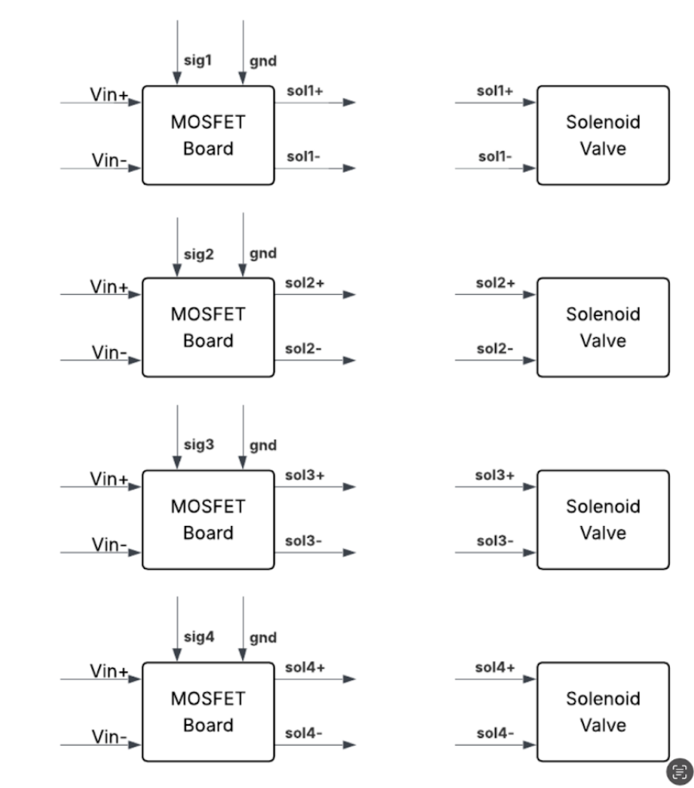
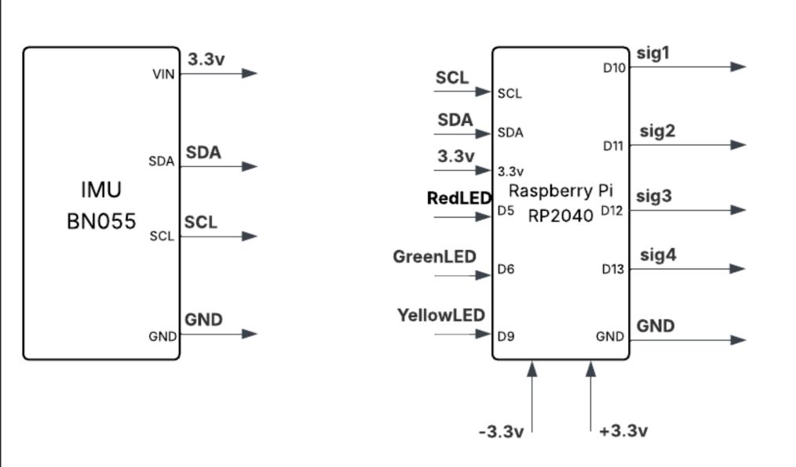
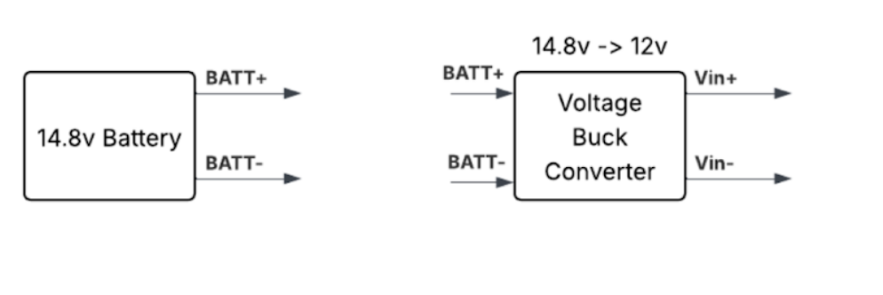

Disclaimer: This project is part of Purdue Orbital's GNC team. This is by no means a solo project, but rather a collaborative effort among many talented individuals. My specific contributions are detailed below.

Polaris is a cold-gas thruster system designed to actively stabilize the launchpad just before launch, ensuring the platform remains secure and steady during critical moments. The system is built around an RP2040-based microcontroller that controls relays and solenoids, powered by batteries, and continuously monitors environmental conditions through a network of sensors. As the lead software engineer, I am responsible for developing and maintaining the control software that drives this system. My role involves integrating hardware, software, and electronics, as well as developing the control software.
The microcontroller interfaces with sensors such as the IMU and magnetometer, as well as with relays that control the air solenoids for the thrusters. The initial prototype is complete! We’re now engineering a flight-weight system that will be used on the mission. Current efforts include implementing the CAN bus protocol for communication with other subsystems, selecting a smaller microcontroller (with a push toward a custom PCB), and designing the wiring harness and power system. There are many design decisions in progress, and reliability is the top priority.
Above is a ground test that was ran. The control program was executed, followed by a manual spin test of Polaris to observe its response. Highlighted portions represent manual spins. The sign convention used is as follows: positive indicates clockwise rotation, and negative indicates counter-clockwise rotation. Observed oscillations are due to the test unit swaying during the experiment.
# PID Loop
while True:
try:
# Loop through different headings
cycle_headings()
current_time = time.monotonic() # Store monotonic time
current_heading = get_current_heading()
## For data logging
gyro_x, gyro_y, gyro_z = sensor.gyro or (999,999,999)
# Compute with wraparound handling
# This means 0 and 360 are treated the same.
error = (setpoint - current_heading + 180) % 360 - 180
# Compute delta T
delta_time = current_time - last_time
last_time = current_time
# Compute Derivative
## check if logic
derivative = (error - previous_error) / delta_time if delta_time > 0 else 0
previous_error = error
# Compute PID output
output = (Kp * error) + (Kd * derivative)
The above code snippet showcases the core PID control loop used in Polaris. It continuously reads the current heading from the IMU, calculates the error relative to the desired setpoint, and computes the PID output to adjust thruster activation accordingly. This specific implementation is from a "Martian" test, which cycles between headings of 0°, 90°, 180°, and 270° to evaluate system response and tune PID parameters, as well as look cool!
  The wiring schematics for the different components are shown above. Key components include the RP2040 microcontroller, IMU, magnetometer, solenoid valves, relays, and power supply.